
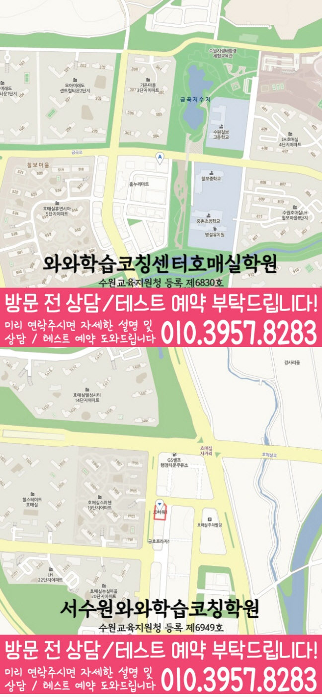

중학생 중 현재 진도, 반복 오답, 시험 준비 순서가 흔들리는 학생에게 적합합니다.
상담 준비 · 직접 작성
금곡동 중등 상담 전 학교 자료 정리표
금곡동에서 상담을 준비할 때 최근 학습 자료를 보며 아래 항목을 직접 적어 보세요. 진도·수행평가·과제 마감 기록을 정리한 뒤, 확인이 필요한 질문을 상담에 가져갈 수 있습니다.
상담 준비 · 직접 작성
최근 학습 자료를 보며 직접 적어 보세요
모든 칸을 채울 필요는 없습니다. 학생이 직접 보여 줄 수 있는 기록부터 적어 보세요.
금곡동 중학생학원 수업 안내

금곡동 중학생학원 센터 지도

기록 활용 안내
점검표를 작성하는 순서
최근 자료에서 실제로 확인한 내용과 아직 확인하지 못한 내용을 구분해 적어 보세요. 아래 학습 안내는 상담 질문을 구체화할 때 함께 참고할 수 있습니다.
- 1. 최근 자료 펼치기
지금 사용하는 교재, 학교에서 받은 자료, 최근 답안 중 현재 상황을 보여 주는 자료를 고릅니다.
- 2. 도움을 받은 부분 구분하기
혼자 해낸 내용과 설명 뒤 해결한 내용을 따로 적어 다음에 확인할 지점을 찾습니다.
- 3. 질문으로 정리하기
막힌 지점과 가능한 공부 시간을 바탕으로 상담에서 확인할 질문을 정리합니다.
경기 수원시 금곡동에서 금곡동 중학생학원을 알아볼 때는 학원 이름만 비교하기보다 학생의 현재 진도, 시험 범위, 숙제 실행, 반복 오답을 함께 보는 것이 중요합니다. 와와학습코칭센터는 영어·수학 학습을 기준으로 영어와 수학의 현재 진도, 과목별 약점, 주간 학습 실행 상태를 점검하고, 진단 → 계획 → 수업 확인 → 오답 재학습 흐름이 이어지도록 관리합니다. 상담 전에는 학생의 최근 학습 자료를 바탕으로 중등반에 필요한 우선순위를 정리하는 것이 좋습니다.
학습 안내 요약
학습 안내를 읽을 때 함께 볼 항목
작성한 기록과 아래 학습 안내를 함께 살펴보고, 상담에서 확인할 내용과 학생이 다시 시도할 내용을 구분해 보세요.
영어·수학 학습을 중심으로 영어와 수학의 현재 진도, 과목별 약점, 주간 학습 실행 상태를 함께 확인합니다.
최근 시험지, 현재 교재, 자주 틀리는 단원, 평소 공부 시간을 준비하면 더 정확한 상담이 가능합니다.
금곡동 중학생학원 핵심 포인트
금곡동 중학생학원을 알아보는 학생과 학부모님이 먼저 확인할 수 있도록 중등반 학생의 현재 교재, 진도, 시험 범위, 반복 오답을 먼저 확인합니다.
영어와 수학의 현재 진도, 과목별 약점, 주간 학습 실행 상태를 수업 안에서만 끝내지 않고 플래너 실행과 오답 재학습으로 이어지도록 점검합니다.
상담 때는 학생의 성적표보다 현재 공부 흐름, 숙제 수행 정도, 시험 전 복습 순서를 함께 보고 필요한 관리 방향을 정리합니다.
선생님 특징
어디에서 막히는지 질문과 풀이 과정을 통해 확인하고, 필요한 개념을 다시 연결해 문제를 풀 수 있게 만듭니다.
숙제·복습·오답 정리 루틴을 점검해 수업이 끝난 뒤에도 성장이 이어지도록 지도합니다.
수업 진행방식
1. 현재 수준 확인
학년, 학교 진도, 최근 평가 흐름을 바탕으로 단원별 취약점과 자주 틀리는 유형을 정확히 파악합니다.
2. 개념 정리와 내신형 유형 학습
바로 문제풀이로 들어가기보다 핵심 개념을 정리한 뒤 학교 시험에 맞춘 유형을 단계적으로 연습합니다.
3. 오답 관리와 맞춤 피드백
틀린 이유를 분석해 실수 유형을 분류하고, 다음에 어떻게 풀어야 하는지 학습 전략으로 정리해 반복 학습을 돕습니다.
중학생 학년별 학습 전략
중1
- 기초 개념을 탄탄히 하고 영어 문장 구조·수학 기본 연산/단원 개념을 안정적으로 잡습니다.
- 내신에 바로 연결되는 학교 진도 맞춤 복습과 문제 유형 훈련을 진행합니다.
중2
- 영어 문법 확장과 독해 훈련, 수학 단원별 유형 반복 점검으로 성적 상승을 만듭니다.
- 국어·영수 병행으로 시험 체감 난도를 관리하며 오답을 줄이는 학습을 강화합니다.
중3
- 시험 범위와 출제 경향에 맞춰 내신 대비 전략을 세우고, 약한 단원은 집중 보완합니다.
- 시간 배분과 오답 패턴 분석을 통해 평가에서 실점하지 않는 풀이 습관을 만듭니다.
시험 대비
- 평가/모의고사/학교 시험에 맞춰 복습 계획을 조정하고, 실수 유형을 우선 점검합니다.
- 과목별 핵심 포인트와 예상 유형을 정리해 시험 당일 성과로 이어지게 합니다.